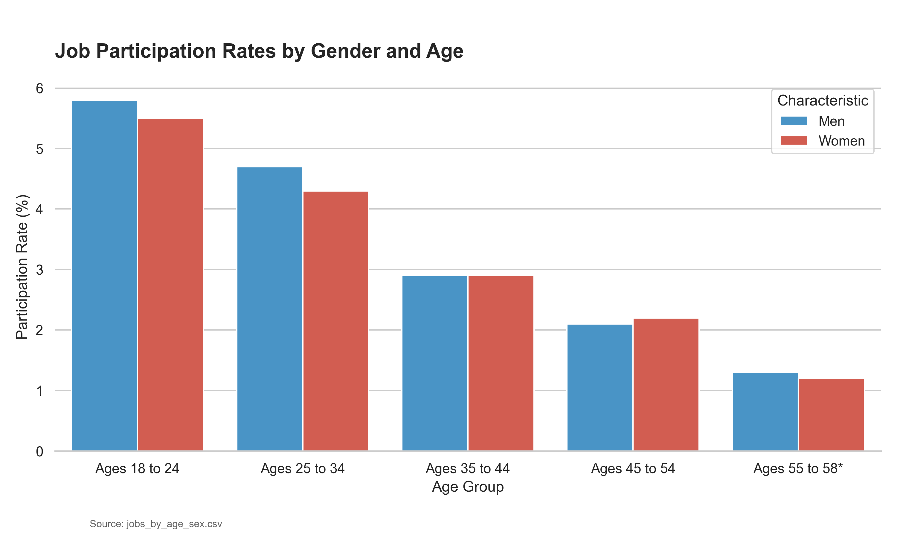

Gender Dynamics in Workforce Participation
While participation peaks in early-to-mid career for both genders, a persistent gap remains across all age brackets.

Key Insights
- Peak Participation: Both men and women reach their highest job participation rates in the 25–44 age range, the core "prime working age" demographic.
- The Gender Gap: Men consistently show higher participation rates than women across every age group, with the gap narrowing slightly in younger cohorts.
- Pre-Retirement Decline: Participation rates drop significantly for both genders after age 45, likely reflecting early transitions out of the workforce or career shifts.